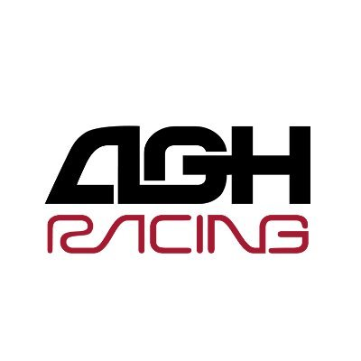
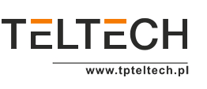

Doświadczenie branżowe i korporacyjne
Projektant Sieci Światłowodowych (AutoCAD) / Negocjator Terenowy
Veroservice · sie 2024 – wrz 2025 · Lublin, hybrydowo
- Opracowywanie projektów instalacji sieci światłowodowych w AutoCAD, współpraca z interesariuszami
- Wizje lokalne i inspekcje terenowe tras instalacji
- Przygotowanie szczegółowej dokumentacji AutoCAD
- Koordynacja dokumentacji technicznej i prawnej do urzędów
- Sporadyczne negocjacje z właścicielami gruntów
- Współpraca z zespołami inżynierskimi i samorządami
AutoCADCADCustomer Service
Administrator badań klinicznych (Global Study Associate)
AstraZeneca · kwi 2025 – sie 2025 · Warszawa, zdalnie
- Koordynacja dokumentacji badań klinicznych zgodnie z ICH-GCP
- Obsługa eTMF, przygotowywanie dokumentów do zgłoszeń w systemie GEL
- Wsparcie przy opracowaniu Clinical Study Report (CSR)
- Koordynacja zadań administracyjnych podczas audytów i inspekcji
- Współpraca międzydziałowa z Data Management, Site Monitoring i partnerami zewnętrznymi
Clinical OperationsDocumentationRegulatory Compliance
Wsparcie ds. Zarządzania Zasobami w Badaniach Klinicznych
AstraZeneca · paź 2024 – sie 2025 · Warszawa, zdalnie
- Planowanie zasobów i koordynacja danych dla globalnych zespołów projektowych
- Monitorowanie obciążenia projektów i przygotowanie prognoz oraz raportów
- Utrzymywanie narzędzi i systemów do planowania zatrudnienia
- Koordynacja spotkań i dokumentacji wewnętrznej
- Współpraca z kierownikami badań i liderami regionalnymi
Resource ManagementProject CoordinationData Analysis

Programista ROS (C++ i Python)
AGH Racing · mar 2023 – lip 2024 · Kraków, stacjonarnie
- Tworzenie oprogramowania autonomicznego bolidu Formula Student
- Moduły percepcji, sterowania i planowania ruchu w ROS, C++, Python
- Integracja czujników LiDAR, kamery, IMU i algorytmy analizy danych sensorowych
- Testy terenowe, debugowanie, optymalizacja systemu
- Współpraca z zespołami mechanicznymi i elektronicznymi
C++ROSPython

Projektant sieci światłowodowych (AutoCAD)
TP TELTECH · lip 2022 – gru 2022 · Świdnik, stacjonarnie
- Projektowanie i dokumentacja instalacji światłowodowych w AutoCAD
- Wizje lokalne i inspekcje terenowe
- Zarządzanie dokumentacją techniczną w cyklu życia projektu
- Współpraca z zespołami międzydziałowymi i zapewnienie zgodności z normami
AutoCADCADOptical Network Design
Więcej doświadczenia pozazawodowego i dodatkowych ról zobacz na moim LinkedIn.